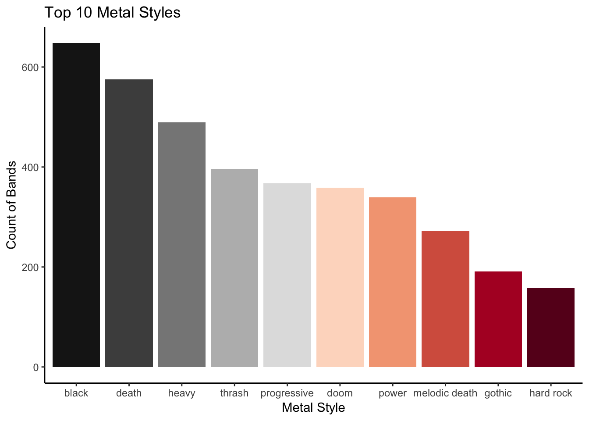

The slides - this page includes the same information, but you might prefer to follow along with the slides.
This is the actual code that was generated in the live coding session introducing R Markdown.
At the end of the document you will also find some extra things that you might want to try out to expand your knowledge and ability to apply the code that you have been learning.
We will be using the Tidyverse packages and the data file "metal_bands_2017.csv". The original version of this data can be found on Kaggle, but we have provided you with the file to download from SiM link.
In the following code chunk load Tidyverse and load the data file for the tasks ahead.
library(tidyverse)
band_dat <- read_csv("files/rmarkdown_1/metal_bands_2017.csv")## Warning: Missing column names filled in: 'X1' [1]## Parsed with column specification:
## cols(
## X1 = col_double(),
## band_name = col_character(),
## fans = col_double(),
## formed = col_double(),
## origin = col_character(),
## split = col_character(),
## style = col_character()
## )## Warning: 4 parsing failures.
## row col expected actual file
## 4443 formed a double - 'files/rmarkdown_1/metal_bands_2017.csv'
## 4600 formed a double - 'files/rmarkdown_1/metal_bands_2017.csv'
## 4822 formed a double - 'files/rmarkdown_1/metal_bands_2017.csv'
## 4949 formed a double - 'files/rmarkdown_1/metal_bands_2017.csv'As you can see the styles of metal are combined into the same cell, much the same as the eye descriptions were. This is less than optimal. They are separated by commas, however, which allows them to be easily split.
Separate these out into 4 different columns (s1, s2, s3, s4), dropping the extra.
band_separate <- separate(band_dat,
style,
c("s1", "s2", "s3", "s4"),
sep = ",",
extra = "drop")## Warning: Expected 4 pieces. Missing pieces filled with `NA` in 4915
## rows [1, 2, 3, 4, 5, 6, 7, 8, 9, 10, 11, 12, 13, 14, 15, 16, 17, 18, 19,
## 21, ...].The data is still not tidy, as we have multiple “observations” (more than one style descriptor) on each row.
Turn the data from this wide format into long format, using the gather() function with the arguments key = "style_n" and value = "style".
band_gather <- gather(band_separate,
"style_n", "style",
s1:s4)As you can see, not all bands has 4 or more style descriptions, leaving a lot of NAs in our data.
Filter out the rows that have styles of NA.
band_filtered <- filter(band_gather,
is.na(style) == F)
# also valid to use !is.na(style) as this and is.na(style) == F should produce the same outcome.To remove differences caused by capitalisations we should change style to lower case. We should also remove any white space before and after the descriptors.
Let us also change the split column… bands with “-” here are still active. We want to replace this value with the current year. A further problem is that the column is read by R as character information, not numeric.
band_mutated <- mutate(band_filtered,
style = tolower(style),
style = trimws(style),
split = ifelse(split == "-", 2017, split),
split = as.numeric(split))
# ifelse() is an example of a control flow statement- it allows you to set a simple decision making criterion
# if this is true, one thing will be done, if it is false another thing will be done
# it's arguments fall in the format of "ifelse(test, yes, no)"
# in our example, if year is "-", change it to 2017, otherwise leave it as the existing value of split.
band_mutated_2 <- mutate(band_filtered,
style = trimws(tolower(style)),
split = ifelse(split == "-", 2017, split),
split = as.numeric(split))
# it is also valid to "nest" functions within each other.
# functions done this way will be run from the inside out
# so for example:
# style = trimws(tolower(style)) will make them lower case, then remove whitespace
# I prefer to do them a step at a time, however, because nesting messes with my head.Group the data by style and summarise it by counting the number of bands with each style.
band_style_grouped <- group_by(band_mutated, style)
band_style_summary <- summarise(band_style_grouped,
n = n())
# n() is a "summary function" that is used within the "summarise()" function.
# there are a number of summary functions that are available that do different things
# n() counts the number of rows per group in that data set and stores it in a column named "n"
# n() never takes any arguments!
# mean() would calculate the mean of whatever variable you named within the brackets
# see the cheat sheet for a list of these.
# you can apply more than one summary function at a time.Now we want to find out what the top 10 styles of metal are. This will require us to arrange the summarised data in descending order and retain only the top 10 rows.
band_arranged <- arrange(band_style_summary, desc(n))
# the "n" used here is the column name that we assigned earlier! Not the summary function in this case.
top_10 <- filter(band_arranged, row_number() < 11)
# here we are keeping only the row numbers that are less than 11, effectively keeping the top 10 descriptions as
# the table was are acting on is arranged in descending orderPut this in a graph like you did before with the eyes data set.
You might want to pick a more “metal” colour palette than “spectral”. To see the palettes available load library(RColorBrewer) then display.brewer.all() in the console.
Using the argument direction = -1 within scale_fill_brewer() will reverse the colour scale making “black” metal actually black.
Change the x and y axes using labs() to suitable names.
top_10 %>%
mutate(style = factor(style, levels = style)) %>%
ggplot(aes(style, n, fill = style)) +
geom_col(show.legend = F) +
scale_fill_brewer(palette = "RdGy", direction = -1) +
theme_classic() +
labs(title = "Top 10 Metal Styles",
x = "Metal Style",
y = "Count of Bands")
Why not try piping all the steps to minimise the number of objects you create in the environment?
Now that you also have the capacity to calculate the longevity of each band, why not try finding who has lasted the longest (up to 2017, the date of the data set’s creation)?
What other visualisations could you apply to this set?